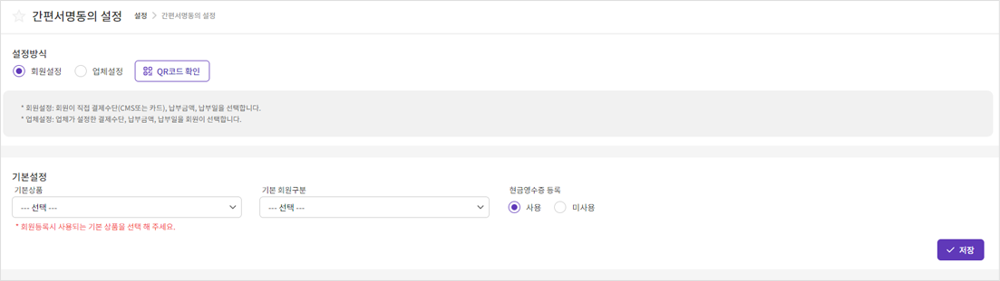
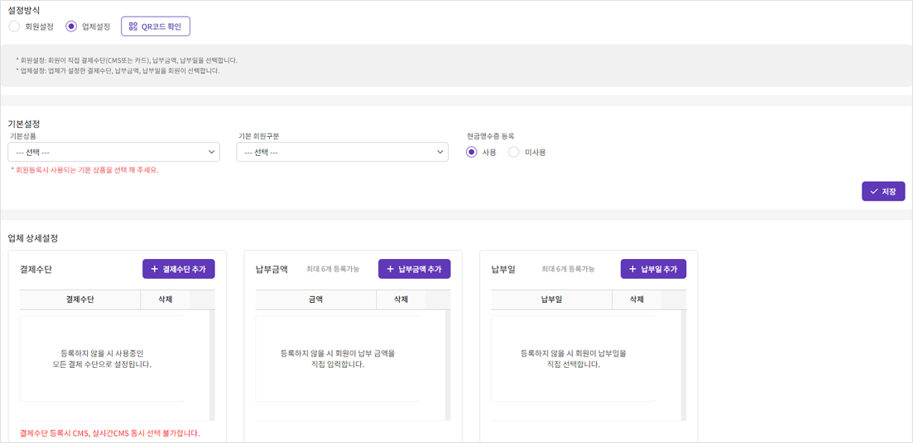

화면별 세부설명 > 설정 > 간편서명동의 설정
간편서명동의 설정
-

간편서명동의는 서면의 동의서 대신 URL/QR코드를 회원(납부자)에게 전달하여 회원(납부자)이 모바일이나 PC 환경에서 결제정보를 입력하고 서명하여 간편하게 자동이체 동의를 수취하는 서비스입니다.
설정방식: 회원설정/업체설정 중 택일 합니다.
- 회원설정: 회원이 직접 결제수단(CMS또는 카드), 납부금액, 납부일을 선택합니다.
- 업체설정: 업체가 설정한 결제수단, 납부금액, 납부일을 회원이 선택합니다.
기본설정: 기본상품 (회원등록시 사용되는 기본 상품)/기본 회원구분/ 현금영수증 등록 기능 사용여부를 사전에 설정하고 저장합니다.
QR코드: 고객의 간편서명동의 QR코드를 다운받거나 URL을 복사 할 수 있는 화면입니다. 다운받거나 복사한 QR코드/링크를 고객에게 전달하여 간편하게 동의를 수취하실 수 있습니다.
-
간편서명동의의 각종 정보들을 업체가 미리 설정할 수 있습니다.

기본설정: 기본상품 (회원등록시 사용되는 기본 상품)/기본 회원구분/ 현금영수증 등록 기능 사용여부를 사전에 설정하고 저장합니다.
업체 상세설정: 결제수단/납부금액/납부일을 사전에 설정하고 저장합니다.
결제수단: 회원이 간편 동의 시 선택 가능한 결제수단을 설정합니다.
- ①“결제수단 추가” 버튼을 클릭하여 결제수단 추가할 수 있습니다.
* 등록하지 않을 경우 사용중인 모든 결제 수단으로 설정됩니다.
- ②결제수단을 선택한 후 저장을 클릭하여 추가합니다.
* 업체에서 이용중인 결제수단만 설정할 수 있습니다.
* CMS와 실시간CMS는 동시에 등록할 수 없습니다.
- ③이미 등록된 결제수단을 삭제하고자 할 때는 삭제버튼을 클릭합니다.
납부금액: 회원이 간편 동의 시 선택 가능한 납부금액을 설정합니다.
- ①“납부금액 추가” 버튼을 클릭하여 클릭하여 납부금액을 추가할 수 있습니다.
* 등록하지 않을 경우 회원이 납부 금액을 직접 입력합니다.
- ②“금액입력”을 선택한 후 납부금액에 납부금액을 입력하여 추가합니다.
- ③“회원직접입력”을 선택한 후 저장하면 설정된 금액 외 회원이 직접 납부금액을 입력 할 수도 있습니다.
- ④이미 등록된 납부금액을 삭제하고자 할 때는 삭제버튼을 클릭합니다.
납부일: 회원이 간편 동의 시 선택 가능한 납부일을 설정합니다.
- ①“납부일 추가” 버튼을 클릭하여 클릭하여 납부일을 추가할 수 있습니다.
* 등록하지 않을 경우 회원이 납부일을 직접 입력합니다.
- ②“회원직접입력”을 선택한 후 저장하면 설정된 납부일 외 회원이 직접 납부일을 입력 할 수도 있습니다.
- ③이미 등록된 납부일을 삭제하고자 할 때는 삭제버튼을 클릭합니다.
TIP!
- 납부일 중 “말일”을 선택할 경우, 해당월의 말일이 납부일로 등록됩니다.